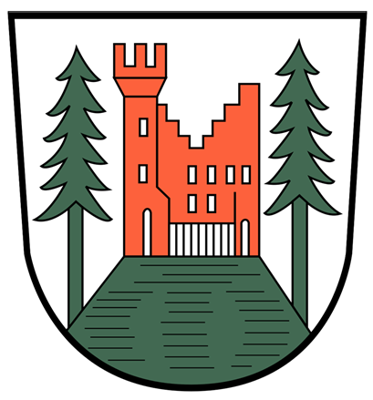

Historie von Furtwangen
Hier erfahren Sie etwas über die Geschichte von Furtwangen.
Gründung
Stadtrechte 5. Mai 1998 (125 Jahre)
Umbau Gasthaus Adler zum Rathaus 1867

Zahlen & Fakten
Bürgermeister:
Josef Herdner
Einwohnerzahl:
8.505 (2024)
Vergangenheit
Wirtschaftlicher Aufschwung durch Uhren und Uhrmacherschule (1850)
Uhrmacherschule wurde zur Hochschule Furtwangen